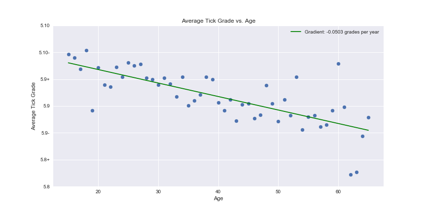
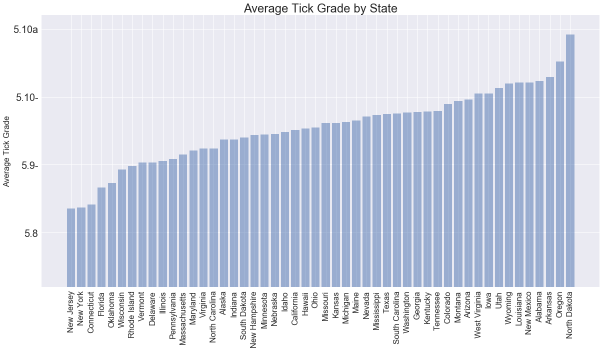
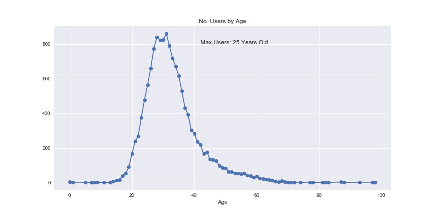
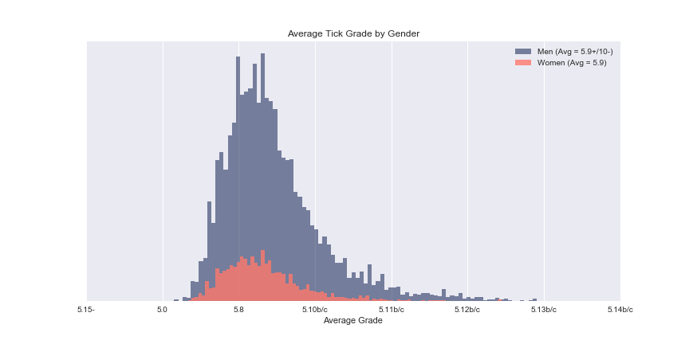
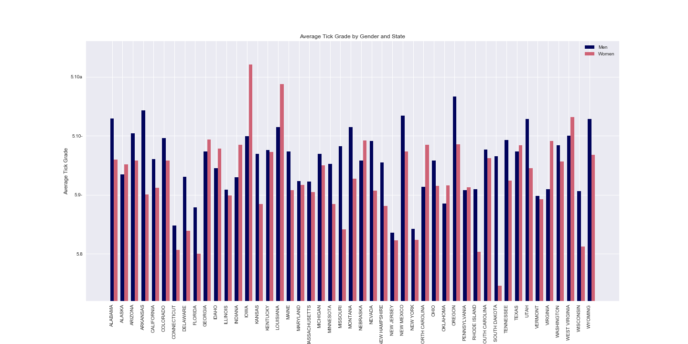

The following charts are fun visualizations of mountain project tick data. I'd love feedback on these, or suggestions for other things to analyze.
Note 1: I obtained this information for my personal interest by scraping the site. I did what I could not to make excessive requests, have no interest in using it as my own. I'd love to hear if anyone thinks this is inappropriate.
Note 2: while mp users are legion, only just under 20,000 have both ticks and demographic info. 14,086 identify as male, 2819 as female. So the gender graphs should be taken with some grains of salt.
Average Tick Grade by Age.

Average Tick Grade by State.

Average Tick Grade by State.

Histogram of Average Tick Grade by Gender.

Histogram of Average Tick Grade by Gender.
